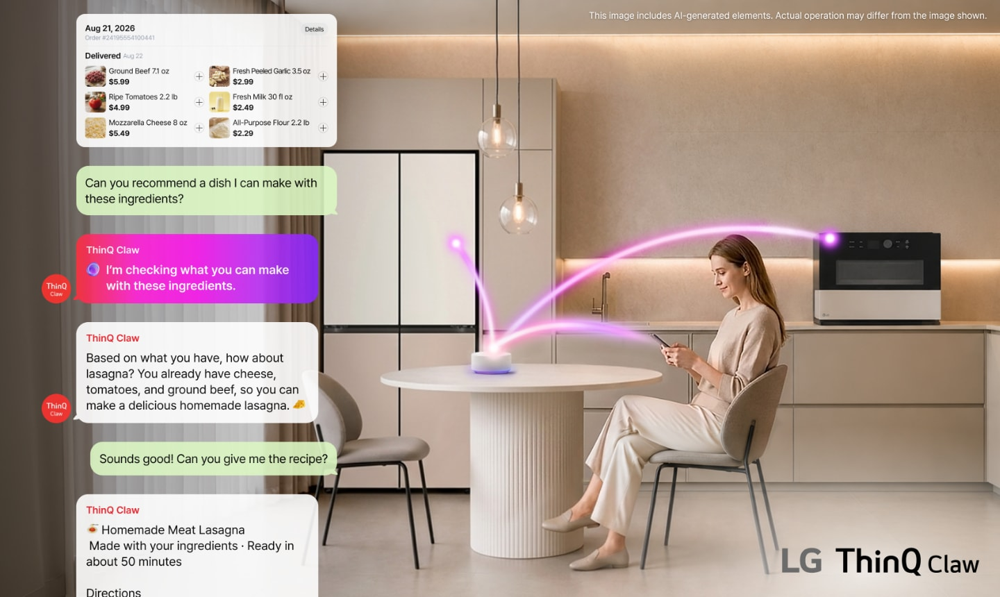

1
厨房智能硬件 · AI技术趋势 · 用户趋势
LG ThinQ Claw：厨房里的 AI Agent 开始读懂上下文
从食材、日程到设备联动，AI Home 不再只是远程开关，而是在推断“下一步该做什么”。

LG 8 月 31 日发布 IFA 2026 预告，展示下一代 AI Home，并重点介绍 ThinQ Claw。官方称它是面向 LG AI Home 的文本聊天式 AI Agent，能够理解用户意图和生活上下文，连接服务与设备，给出更贴近当下情境的建议。
在厨房场景里，LG 举例称 ThinQ Claw 可根据用户的待客计划管理烹饪设备，也能结合购物、食材与偏好推荐菜谱。它不是单个厨电的 AI 功能，而是把冰箱、烤箱、环境、日程和服务串成一个家庭操作系统。
小编有话说这条对厨电最有参考价值。未来厨房里的核心竞争，不只是某台设备更聪明，而是谁能把“我有什么食材、我要招待谁、设备现在能做什么”连成完整决策链。